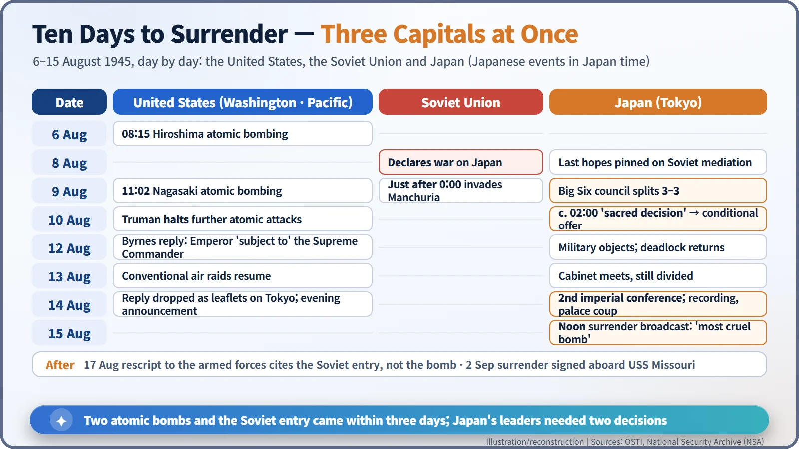
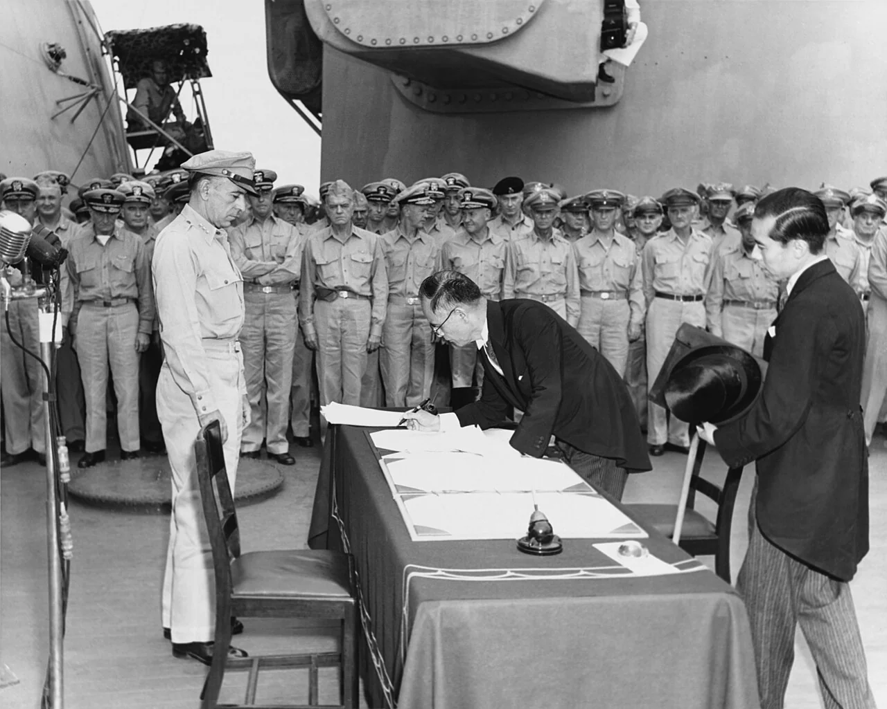
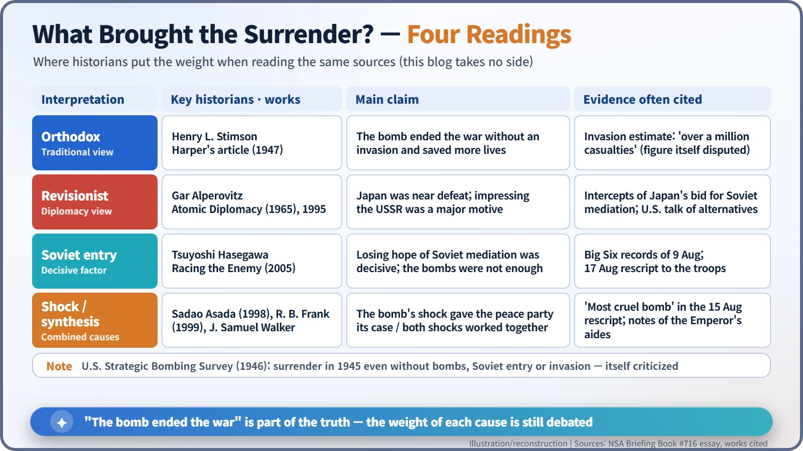
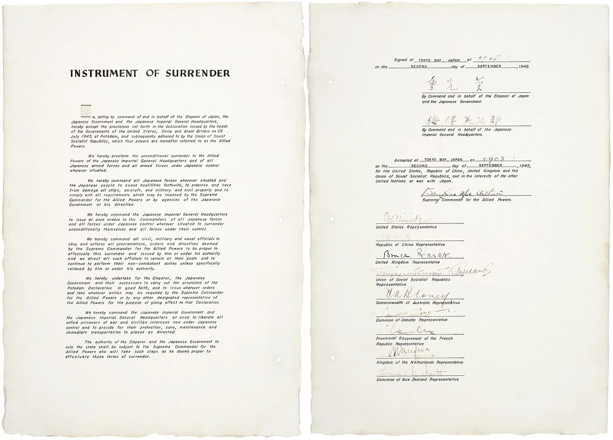

Nuclear History · 121
One Reason for Civilians, Another for Soldiers: Did the Atomic Bomb End the War? Japan's Surrender, 1945
The Emperor named the bomb to the nation and the Soviet Union to his soldiers; historians have argued over the cause ever since.
Japan surrendered in August 1945 after two atomic bombs and a Soviet declaration of war arrived within three days of each other. The Emperor's broadcast to the nation named the "new and most cruel bomb"; his rescript to the armed forces two days later named the Soviet entry instead. Which shock mattered most is still debated, and this article sets out the main interpretations side by side without taking a side.
Two speeches, two reasons
At noon on 15 August 1945, people across Japan gathered around radios. Through the crackle came a voice almost no one had heard before: the Emperor's. He spoke in a formal court language that many listeners struggled to follow, but one sentence stood out: "the enemy has begun to employ a new and most cruel bomb, the power of which to do damage is, indeed, incalculable, taking the toll of many innocent lives." [1] [5]
Two days later, on 17 August, the Emperor issued a separate rescript to the officers and men of the army and navy. The bomb is not mentioned there at all. Instead it says: "Now that the Soviet Union has entered the war against us, to continue the war under the present internal and external conditions would be only to increase needlessly the ravages of war." To the nation he named the bomb; to the soldiers he named the Soviet Union. So what actually brought Japan to surrender? Historians are still arguing about it. [6]
Three shocks in three days
On 6 August an atomic bomb destroyed Hiroshima. On 8 August the Soviet Union broke its neutrality pact with Japan and declared war; shortly after midnight on the 9th its armies poured into Manchuria. At 11:02 a.m. on 9 August a second atomic bomb fell on Nagasaki. All of this happened within three days. [1]
On the morning of the 9th, Japan's Supreme Council for the Direction of the War, the so-called "Big Six", met in Tokyo. News of Nagasaki arrived during the meeting, yet the council split three against three. Prime Minister Suzuki Kantaro, Foreign Minister Togo Shigenori and Navy Minister Yonai Mitsumasa wanted to accept the Potsdam Declaration with a single condition: preserving the imperial institution, the kokutai. War Minister Anami Korechika and the two chiefs of staff held out for four conditions, adding that Japan would disarm its own forces, try its own war criminals and face only a minimal occupation. [2] [6]
A midnight conference and the "sacred decision"
An imperial conference opened just before midnight, and still there was no agreement. At around 2 a.m. on 10 August, Suzuki took the unusual step of asking the Emperor himself to decide. Hirohito (1901–1989) sided with the foreign minister's one-condition proposal. In Japan this became known as the seidan, the "sacred decision". [2]
That same day Japan told the Allies, through neutral Switzerland and Sweden, that it accepted the declaration "with the understanding that the said declaration does not comprise any demand which prejudices the prerogatives of His Majesty as a Sovereign Ruler." [2]
In Washington on 10 August, General Leslie Groves reported that the next bomb would be ready for use in the first good weather after 17 or 18 August. President Harry S. Truman (1884–1972) ordered that no further atomic bomb be dropped without his express authority. According to the diary of Commerce Secretary Henry Wallace, Truman said that the thought of wiping out another 100,000 people was too horrible; he did not like the idea of killing "all those kids." [1] [2]
An ambiguous reply and a record that nearly vanished
The American reply, sent in the name of Secretary of State James Byrnes, arrived on 12 August. It said that from the moment of surrender the authority of the Emperor and the Japanese government "shall be subject to the Supreme Commander of the Allied powers." It neither guaranteed the throne nor abolished it. The military objected again. [1] [6]
On 14 August, at a second imperial conference, the Emperor once more chose to accept. That night he read the surrender rescript aloud and it was recorded onto discs, which a chamberlain hid inside the palace. During the night a group of young army officers tried to seize the palace and find the recording (the Kyujo incident). They failed. War Minister Anami, who did not join them, took his own life early on the 15th. At noon the recording went out on the air. [1] [6]

On 2 September, aboard the battleship USS Missouri in Tokyo Bay, Foreign Minister Shigemitsu Mamoru (1887–1957) and Army Chief of Staff Umezu Yoshijiro signed the Instrument of Surrender. The document records the time of their signature as 09:04, and General MacArthur's acceptance at 09:08. [7]

The same sources, different conclusions
Broadly, the explanations fall into four families.
The orthodox view
In the February 1947 issue of Harper's Magazine, former Secretary of War Henry L. Stimson wrote: "I was informed that such operations might be expected to cost over a million casualties, to American forces alone." The atomic bomb, on this reading, ended the war without an invasion and so saved more lives than it took. Critics such as Barton Bernstein argue that such large figures grew after the war; others reply that some high estimates did exist in 1945. [3] [2]
The revisionist view
In Atomic Diplomacy (1965), Gar Alperovitz argued that Japan was already collapsing and that a major purpose of the bombing was to impress the Soviet Union. The U.S. Strategic Bombing Survey of 1946 had concluded that Japan "would have surrendered even if the atomic bombs had not been dropped, even if Russia had not entered the war, and even if no invasion had been planned or contemplated," certainly before the end of 1945. That conclusion has itself been criticized as weakly supported. [4] [2]
The Soviet-entry view
In Racing the Enemy (2005), Tsuyoshi Hasegawa (born 1941) argues that the decisive blow was the collapse of Tokyo's last hope, Soviet mediation: the two bombs "were not sufficient to change the direction of Japanese diplomacy. The Soviet invasion was." The 17 August rescript is one of his pieces of evidence. [2] [8]
Shock and synthesis
Sadao Asada (1998) argued that the shock of the atomic bomb gave Japan's peace faction the justification it needed. Richard B. Frank (Downfall, 1999) judges the Soviet entry "significant but not decisive." J. Samuel Walker sees both shocks working together. [2]

An ending that does not fit in one sentence
This blog does not rule on which interpretation is right. What the sources do show is clear enough: two atomic bombs and the Soviet entry came within three days of each other; the fate of the throne remained the sticking point to the very end; and the Emperor had to intervene not once but twice. "The bomb ended the war" is part of the truth, but only part.
